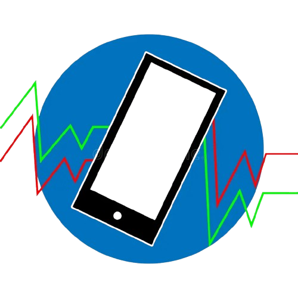

As ondas de TV são um tipo de onda eletromagnética essencial para a transmissão de sinais de áudio e vídeo, permitindo que programas televisivos alcancem milhões de pessoas ao redor do mundo. Desde o início do século XX, elas desempenham um papel fundamental na comunicação e no entretenimento.
Essas ondas operam em faixas específicas do espectro eletromagnético, variando entre 54 MHz e 806 MHz, dependendo do padrão de transmissão (analógico ou digital).
Características das Ondas de TV
Frequência Baixa a Média: As ondas de TV têm frequências relativamente baixas, o que proporciona maior alcance, mas também limita a quantidade de dados transmitidos.
Propagação Longa: Elas podem viajar longas distâncias e superar obstáculos como prédios e árvores, graças à sua baixa frequência.
Modulação: Transmissões analógicas utilizavam modulação AM ou FM, enquanto as digitais empregam técnicas como a modulação QAM para transmitir sinais mais complexos.
Funcionamento
As ondas de TV são geradas por estações de transmissão e propagadas por antenas. Elas podem viajar diretamente ou serem refletidas pela ionosfera para alcançar regiões mais distantes.
Com o advento da TV digital, o sinal se tornou mais eficiente, permitindo maior qualidade de imagem e som, além de novos recursos, como legendas e múltiplos canais em uma única frequência.
Tipos de Transmissão
TV Analógica: Usada até o início do século XXI em muitas regiões, a transmissão analógica era simples, mas vulnerável a interferências, o que resultava em imagens de baixa qualidade.
TV Digital: Substituiu a analógica em boa parte do mundo, oferecendo maior qualidade de imagem e som, menor interferência e a possibilidade de transmitir múltiplos canais.
Ondas De Celular

As ondas de celular são um tipo de onda eletromagnética que desempenha um papel fundamental na comunicação móvel moderna. Elas são responsáveis por transportar dados e voz entre dispositivos móveis, como celulares, torres de transmissão e redes centrais.
Essas ondas operam em frequências de 700 MHz a 2600 MHz, mas tecnologias mais recentes, como o 5G, utilizam faixas ainda mais altas, que chegam a 30 GHz a 300 GHz. Essa expansão em frequências permite que mais dispositivos se conectem simultaneamente e com maior velocidade.
Características das Ondas de Celular
Frequência Alta: Frequências mais elevadas resultam em maior capacidade de transmissão de dados, mas com alcance menor em comparação a frequências mais baixas.
Alta Direcionalidade: Ondas de celular podem ser direcionadas para áreas específicas, otimizando o uso da largura de banda.
Sensibilidade a Obstáculos: Construções, árvores e até o clima podem interferir na qualidade do sinal.
Funcionamento
As ondas de celular são geradas por antenas instaladas em torres ou pontos de acesso (como pequenas células no 5G). Essas ondas viajam em linha reta até encontrarem dispositivos receptores.
A transmissão utiliza uma técnica chamada modulação, que incorpora informações digitais (dados, áudio, vídeo) nas ondas portadoras.
Aplicações
Chamadas de Voz: Transmissão de áudio em tempo real.
Internet Móvel: Transferência de dados para navegação, streaming e comunicação digital.
Serviços de Localização: Uso do GPS e localização baseada em redes celulares.
Diferências entre Ondas de TV e Celular
Embora tanto as ondas de TV quanto as ondas de celular sejam formas de radiação eletromagnética, elas possuem características distintas em termos de frequência, propagação, modulação e aplicações.
A seguir estão as principais diferenças entre essas duas tecnologias:
Frequência e Faixa Espectral
Ondas de TV: Operam nas faixas de VHF e UHF, entre 54 MHz e 806 MHz.
Ondas de Celular: Operam em faixas mais altas, variando entre 700 MHz e 2.6 GHz.
Propagação e Alcance
Ondas de TV: Maior alcance, especialmente com frequências VHF, podendo atravessar obstáculos com mais facilidade.
Ondas de Celular: Menor alcance, mais sensíveis a obstruções, mas com maior capacidade de carga de dados.
Modulação e Transmissão
Ondas de TV: Utilizam modulação AM para vídeo e FM para áudio em transmissões analógicas; modulação QAM em digital.
Ondas de Celular: Usam modulação OFDM e CDMA, com a tecnologia mais recente (5G) utilizando modulação QAM.
Capacidade de Transmissão de Dados
Ondas de TV: Capacidade limitada, adequadas para transmissão unidirecional de vídeo e áudio.
Ondas de Celular: Alta capacidade de transmissão bidirecional de dados, incluindo voz, internet, e serviços de comunicação em tempo real.
Aplicações e Usos
Ondas de TV: Usadas para transmissões de conteúdo audiovisual, como programas de TV, filmes, notícias e alertas de emergência.
Ondas de Celular: Usadas para comunicação móvel, incluindo chamadas de voz, internet, mensagens, e aplicativos de dados.